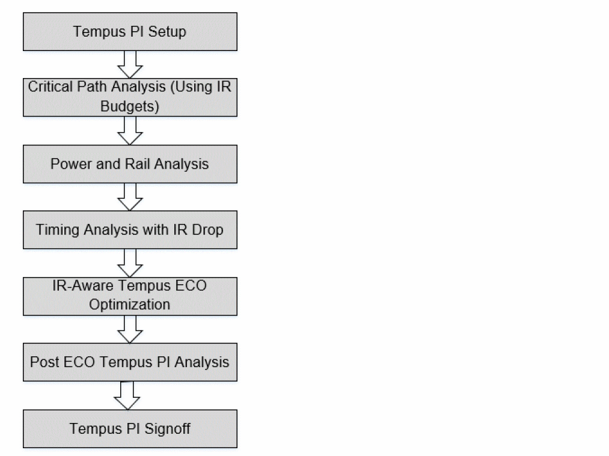

Tempus Power Integrity Flow
The following diagram illustrates the Tempus PI flow:

To perform Tempus PI analysis, perform the following steps:
-
Tempus PI Setup: Load the input design database. This includes LEF, timing libraries, netlist, SDC, DEF, and SPEF.
Timing libraries are needed for multiple voltages below the nominal operating voltage, preferably in the step size of 10% to 15% of the lowest voltage. This is required for accurate STA analysis with voltage interpolation because timing analysis will be done at the software computed post-IR effective instance voltages, instead of the nominal voltage. Recommendation is to have at least three different voltage libraries to enable accurate non-linear delay interpolation. -
Critical Path Analysis: Identify the timing-critical and IR-sensitive paths using the user-specified IR budgets. The identified critical paths are scheduled in dynamic vectorless simulation.
The user-specified IR budgets are the estimated worst IR drops expected in the design. - Power and Rail Analysis: Perform directed vectorless power analysis by scheduling the critical paths identified in step 2. After power analysis is done, run rail analysis to generate the Effective Instance Voltage (EIV) database.
- Timing Analysis with IR Drop: Specify the EIV database generated from rail analysis as input to timing analysis, and then rerun STA analysis. The IR-induced timing violations are reported post this step.
- IR-Aware Tempus-ECO Optimization: Perform ECO fixing on timing violations reported after IR-aware STA analysis.
- Post-ECO Tempus PI Analysis: Run the Tempus PI analysis again to re-check the results after Tempus ECO.
This flow generates an EIV database with better timing and potentially better IR drop.
Return to top